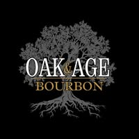

Brand Website
Premium landing page, bottle pages, barrel releases, founder story, trade-ready positioning.
Louisville, Kentucky
Oak & Age Bourbon is a premium bourbon concept rooted in character, craftsmanship, and the belief that not every barrel deserves to be bottled.
The Story
Oak & Age should feel like a bourbon worth discovering, not a label trying to shout over the shelf. The brand promise is simple: select with care, respect time, and bottle what stands apart.
This page is intentionally built around that idea. Historic rickhouse imagery, restrained typography, and a darker visual field all support a premium Southern tone without drifting into corporate polish.
As more information comes in from Dan and the other partners, this section can expand into a full founder story, selection philosophy, release narrative, and tasting-led brand identity.

Featured Release

Barrel 001
This section is designed to evolve into a proper release block with tasting notes, mash bill, barrel source, release count, and availability. Even now, it gives the brand a premium product center instead of leaving the page feeling abstract.
Brand Philosophy
This is the line to build around. It is sharper, more ownable, and more premium than generic bourbon copy about heritage and craft.
Oak & Age should speak like a confident selector: measured, exact, and willing to leave good barrels behind in pursuit of better ones.


Louisville Advantage
Oak & Age has more opportunity if it is positioned not only as a bourbon label, but as part of the Louisville bourbon experience. That opens the door to local search, tourism discovery, hospitality partnerships, and event-led marketing.
That means future expansion into pages and content around Louisville bourbon, tasting culture, release events, restaurant placement, and bourbon tourism relevance.
What This Can Become
Premium landing page, bottle pages, barrel releases, founder story, trade-ready positioning.
Pages built to win discovery around Louisville bourbon, small-batch bourbon, and local tasting intent.
Release announcements, short-form storytelling, local event content, and tourism-aware bourbon content.
Restaurant, bar, and tasting-room positioning supported by stronger digital presentation.
Follow the Journey
Use this section now for Facebook, then expand into Instagram, email, release alerts, and tasting announcements as the brand matures.